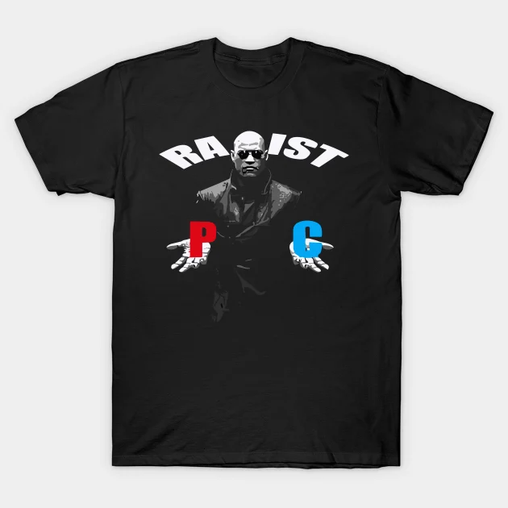
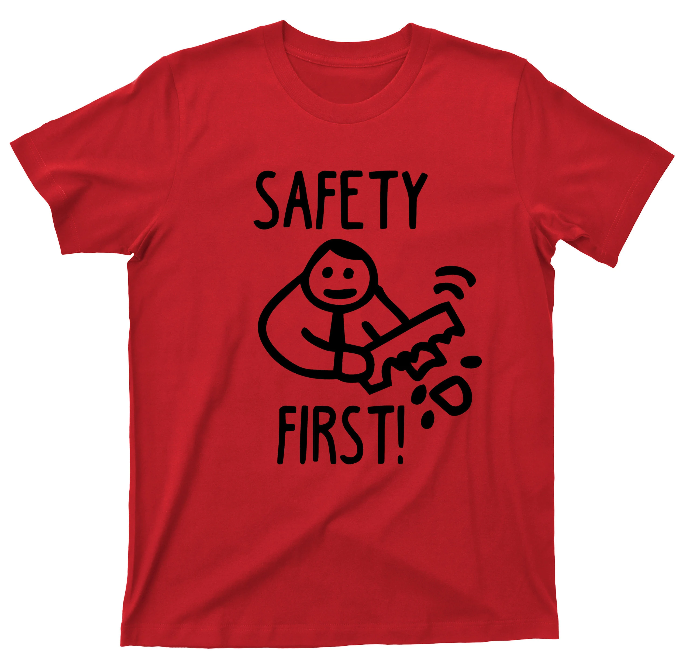
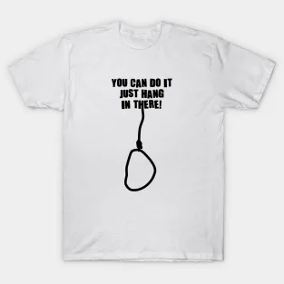
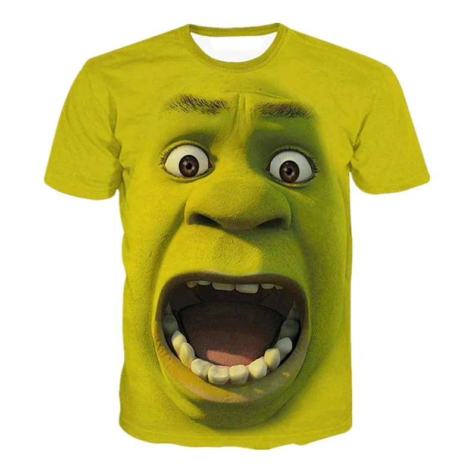
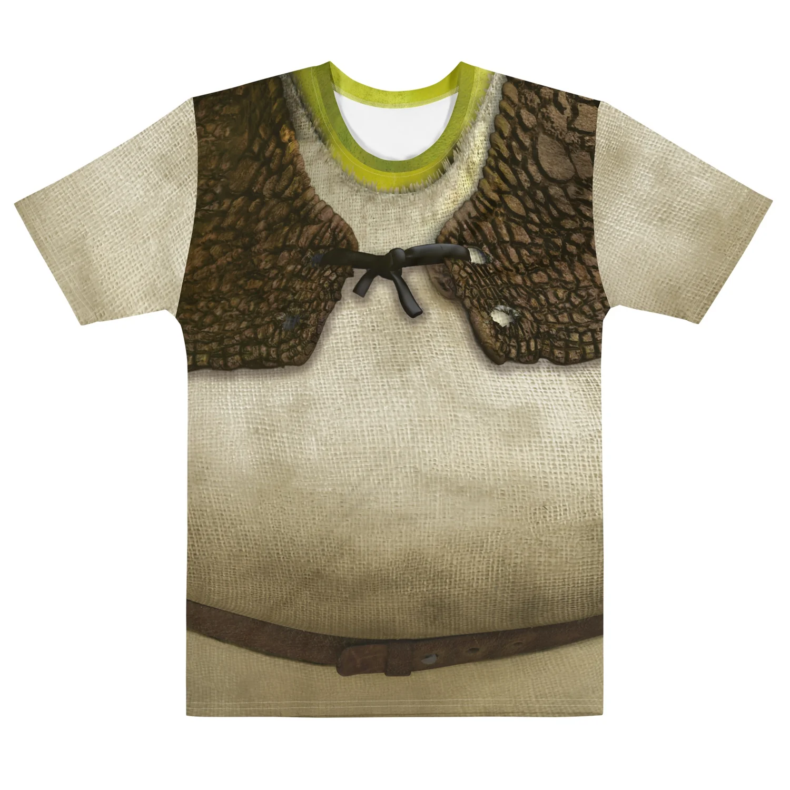
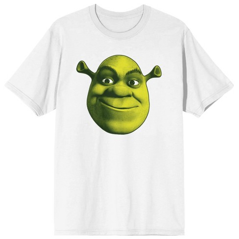

| ID | Cím | Kép | Méret | Leírás | Ár | DB | Törlés | Szerkeztés |
|---|---|---|---|---|---|---|---|---|
| 1 | Morpheus póló |  |
S,M,L,XL | A pólódat kifordítva 30 fokon, szárítógép használata nélkül mosd ki, így vigyázva a 100% pamut szövet és a nyomat minőségére... | 2990 Ft | 45 | ||
| 2 | Piros póló |  |
S,M,L,XL | A pólódat kifordítva 30 fokon, szárítógép használata nélkül mosd ki, így vigyázva a 100% pamut szövet és a nyomat minőségére... | 2990 Ft | 45 | ||
| 3 | Fehér póló |  |
S,M,L,XL | A pólódat kifordítva 30 fokon, szárítógép használata nélkül mosd ki, így vigyázva a 100% pamut szövet és a nyomat minőségére... | 2990 Ft | 45 | ||
| 4 | Shrek péló | S,M,L,XL | A pólódat kifordítva 30 fokon, szárítógép használata nélkül mosd ki, így vigyázva a 100% pamut szövet és a nyomat minőségére... | 2990 Ft | 45 | |||
| 5 | Shrek teljes póló |  |
S,M,L,XL | A pólódat kifordítva 30 fokon, szárítógép használata nélkül mosd ki, így vigyázva a 100% pamut szövet és a nyomat minőségére... | 2990 Ft | 45 | ||
| 6 | Mellény póló |  |
S,M,L,XL | A pólódat kifordítva 30 fokon, szárítógép használata nélkül mosd ki, így vigyázva a 100% pamut szövet és a nyomat minőségére... | 2990 Ft | 45 | ||
| 7 | Vagány póló |  |
S,M,L,XL | A pólódat kifordítva 30 fokon, szárítógép használata nélkül mosd ki, így vigyázva a 100% pamut szövet és a nyomat minőségére... | 2990 Ft | 45 |